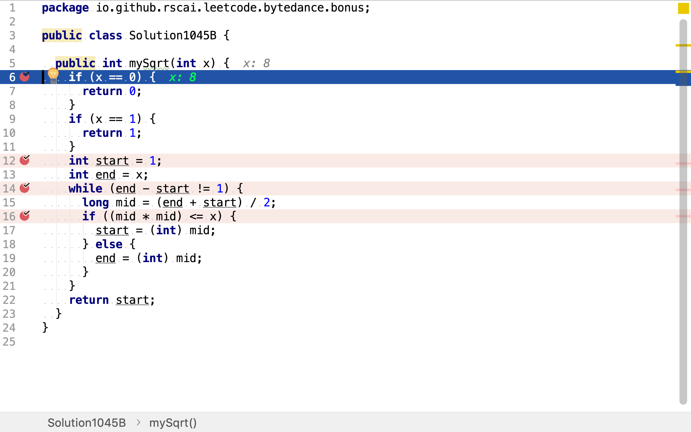

x的平方根
題目
實現 int sqrt(int x) 函數。
計算並返回 x 的平方根，其中 x 是非負整數。
由於返回類型是整數，結果只保留整數的部分，小數部分將被捨去。
示例 1
輸入: 4 輸出: 2示例 2
輸入: 8 輸出: 2 說明: 8 的平方根是 2.82842..., 由於返回類型是整數，小數部分將被捨去。
牛頓法
在數學中，一個數 的平方根指的是滿足 的數，即平方結果等於的數。例如，4和-4都是16的平方根，因為 。
任意非負實數都有唯一的非負平方根，稱為主平方根或算術平方根（英語：principal square root），記為 ，其中的符號√稱作根號。例如，9的主平方根為3，記作，因為 並且3非負。被求平方根的數稱作被開方數（英語：radicand），是根號下的數字或者表達式，即例子中的數字9。
正數有兩個互為相反數的平方根：正數 與負數，可以將兩者一起記為 。
負數的平方根在複數系中有定義。而實際上，對任何定義了開平方運算的數學對象都可考慮其「平方根」（例如矩陣的平方根）。
正數的平方根
若正整數x是平方數，則其平方根是整數。若正整數x不是平方數，則其平方根是無理數。
計算方法
長除式算法
長除式算平方根的方式也稱為直式開方法，原理是 。
- 首先將要開平方根的數從小數點分別向右及向左每兩個位一組分開，如98765.432內小數點前的65是一組，87是一組，9是一組，小數點後的43是一組，之後是單獨一個2，要補一個0而得20是一組。如1 04.85 73得四組，順序為1' 04. 85' 73'。
- 將最左的一組的數減去最接近又少於它的平方數，並將該平方數的開方（應該是個位數）記下。
- 將上一步所得之差乘100，和下一組數加起來。
- 將記下的數乘20，然後將它加上某個個位數，再乘以該個個位數，令這個積不大於但最接近上一步所得之差，並將該個個位數記下，且將上一步所得之差減去所得之積。
- 記下的數一次隔兩位記下。
- 重覆第3步，直到找到答案。
- 可以在數字的最右補上多組的00'以求得理想的精確度為止。
牛頓法
如果要求的平方根，選取
例子：求 至6位有效數字。
代碼實現
當輪入整數是0或1時，可以直得出其平方根。

牛頓法是在連續函數上逐步逼近，所以將中間變量定義為較大取值範圍的double。
已知除了平方數，其它正整數的平方根都是無理數。所以，牛頓法只能通過不斷迭代不斷逼近平方根。實際實現中必須要有迭代中止條件，此處我們當前後兩次迭代結果相差小於1e-12即中止迭代。
複雜度分析
時間複雜度
理論上講，牛頓法時間複雜度是。但其實際表現取決於初始值的選擇和迭代中止條件（Tolerance）的選擇。
請參考：
空間複雜度
使用了兩個變量xn, xn1，空間複雜度為。
二分搜索法
根據平方根定義，大於1的正整數平方根x是一個大於1小於S的實數。而本題只求平方根的整數部份，實際上就是求1至平方根x之間最大的整數。1至平方根x之間的整數是有限及有序的，二分搜索法可有效地在有限有序序列中搜索目標值。
步驟：
- 將1至S的整數序列切分為二
- 若中間值的平方小於或等於S，則繼續在右半段序列中搜索：若中間值的平方大於S，則繼續在左半段序列中搜索
- 當序列片斷僅為一個整數時，其就是所求目標值
舉個例子，求20的平方根的整數部份。20的平方根肯定是1至20之間，20平方根的整數部份一定是1至20之間19個整數中的一個。
- 將序列
1,2,...,18,19二分為1,2,...,9和10,...,19，中間值10的平方100大於20，繼續在左半段搜索 - 將左半段序列
1,2,...,18,19二分為1,2,3,4和5,6,7,8,9，中間值5的平方25大於20，繼續在左半段搜索 3.將左半段序列1,2,3,4二分為1,2和3,4，中間值3的平方9小於20，繼續在右半段中搜索 - 將右半段序列
3,4二分為3和4，中間值4的平方16小於20，繼續在右半段中搜索 - 右半段
4僅有一個整數，所以4就是所求值
代碼實現
先處理一些簡單的情況，如輸入整數是0或1。

整數序列的起止初始為1和輪入整數，區間使用左閉右開模式。

二分搜索法是一種遞歸方法，這𥚃使用while循環實現遞歸。遞歸中止條件為整數序列僅包含一個整數。

將整數序列不斷地二分，通過中間值平方和輸入值之間的大小關系，判斷目標值是在左半段序列或是在右半段序列。

複雜度分析
時間複雜度
假設初始整數序列，即輪入整數值，為，二分法一共要進行次二分和判斷中間值平方和輪入值關系。所以，時間複雜度為。
空間複雜度
使用了三個變量start, end, mid，空間複雜度為。